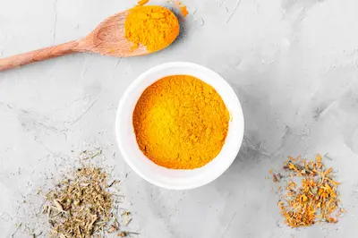

Cúrcuma: El Antiinflamatorio Natural Más Poderoso
La ciencia detrás de la curcumina
La cúrcuma, una raíz dorada originaria de Asia, contiene curcumina, un compuesto con propiedades antiinflamatorias comparables a algunos fármacos (como el ibuprofeno), pero sin efectos secundarios. Estudios demuestran su eficacia para aliviar dolores articulares, reducir marcadores de inflamación en sangre e incluso proteger contra enfermedades neurodegenerativas como el Alzheimer. Sin embargo, su absorción es limitada si se consume sola. La piperina de la pimienta negra aumenta su biodisponibilidad hasta en un 2000%, y las grasas saludables (como el aceite de coco o el aguacate) facilitan su transporte en el organismo.
Más allá de sus usos médicos, la cúrcuma es un ingrediente versátil en la cocina. Desde el "golden milk" (leche dorada con cúrcuma, canela y miel) hasta guisos y sopas, su sabor terroso y color vibrante enriquecen cualquier plato. En cultivos tradicionales como la medicina ayurvédica, se ha utilizado durante milenios no solo como especia, sino también como cicatrizante y purificador de la sangre. Hoy, la ciencia moderna valida lo que estas prácticas ancestrales ya sabían: la cúrcuma es un tesoro nutricional al alcance de todos.
Recetas y precauciones prácticas
Para aprovechar al máximo la cúrcuma, se recomienda consumirla con otros ingredientes sinérgicos. Una mezcla clásica es "pasta dorada": cúrcuma en polvo, pimienta negra, aceite de coco y agua, cocinada a fuego lento hasta formar una pasta que puede añadirse a batidos o infusiones. Otra opción es mezclarla con huevos revueltos o arroz, combinándola siempre con una pizca de pimienta. Sin embargo, su consumo excesivo (más de 3 cucharaditas diarias) podría causar molestias gástricas en personas sensibles.
Además, quienes tomen anticoagulantes o tengan cálculos biliares deben consultar a un médico antes de consumirla regularmente. Con un uso consciente, esta especia se convierte en un aliado accesible para combatir la inflamación crónica, un factor común en enfermedades como la diabetes o la artritis. Su bajo costo y amplia disponibilidad en mercados locales la hacen ideal para incorporarla como parte de una dieta preventiva.
La cúrcuma en la belleza natural
Esta raíz también tiene aplicaciones tópicas. Mascarillas de cúrcuma con miel y yogur reducen el acné y la inflamación cutánea gracias a sus propiedades antibacterianas. En la India, se usa tradicionalmente en rituales de boda para iluminar la piel. Estos usos alternativos refuerzan su reputación como un ingrediente multifuncional en el cuidado de la salud y la belleza.
Cultivo y sostenibilidad
A diferencia de otros superalimentos importados, la cúrcuma puede cultivarse en climas cálidos y húmedos. Pequeños agricultores en América Latina y el Mediterráneo están comenzando a producirla localmente, reduciendo la huella de carbono asociada a su importación desde Asia. Apoyar estos proyectos promueve una economía circular y asegura una cúrcuma fresca, con mayor concentración de curcumina.